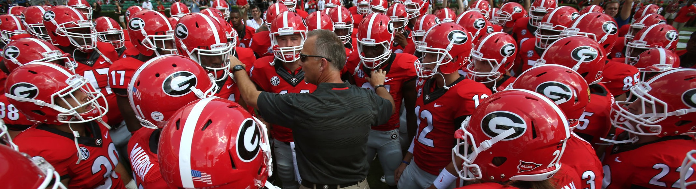

The Georgia Bulldawgs

Everything you need to know about Georgia football...scores, stats and more!
The Georgia Bulldawgs have been a powerhouse football team for decades out of Athens, Georgia.
Home games are played at the well known Sanford Stadium. Georgia's mascot is a Bulldawg named Uga, pronounced "uh guh" and obviously standing for The University of Georgia. The schools
colors are red and black. A common phrase you hear from students and fans of Georgia football is "I bleed red and black." Currently, the coach of the team is Kirby Smart. He is
a new addition to this program as of this year. He replaced Mark Richt who was the head coach for a total of 13 seasons. Although its early, so far Coach Smart has the approval
of many fans and seems to be a great fit at UGA. For many students at this University, Saturdays in the fall are highly anticipated throughout the whole year.
The atmosphere in this stadium is something you can't find anywhere else. The Bulldawgs are part of the Eastern division of the Southeastern Conference, otherwise known as the SEC.
Other teams in the Eastern division of the SEC include...
- Florida
- Tennessee
- Vanderbilt
- Kentucky
- Missouri
- South Carolina
|

|
In 1892, the Bulldawgs began their first season as a football team. When looking at rivalries, the Dawgs have three major ones. The first being the Georgia Tech Jellow Jackets.
This in state rivalry is one of the most exciting games every year and is always the last game of the regular season for the Dawgs. The second rivalry is with the Florida Gators.
Every year this game is played at a neutral field in Jacksonville, Florida where both teams' fans make the trip to watch the teams compete. Lastly, there is the rivalry known as the Deep
South's Oldest Rivalry which is between the Dawgs and the Auburn Tigers.
Since the start of Georgia football, the program has won an impressive fourteen conference
championships. In addition to these, they have won a total of two national
championships, the first in 1942 and then later in 1980. However, when looking at the
entire SEC, Georgia is on the bottom tier of total national championships won, while Alamabama has the most...
- Alabama
- LSU
- Florida
- Auburn
- Tennessee
- Texas Agricultural and Mechanical
- Mississippi
- Arkansas
- Georgia
|

|
2016 Football Schedule
| Date | Opponent | Time | Score |
| Sept. 3 | North Carolina Tar Heels | 5:30 P.M. | Won 33-24 |
| Sept. 10 | Nicholls State Colonels | 12:00 P.M. | Won 26-24 |
| Sept. 17 | Missouri Tigers | 7:30 P.M. | Won 28-27 |
| Sept. 24 | Ole Miss Rebels | 12:00 P.M. | Lost 45-14 |
| Oct. 1 | Tennessee Volunteers | 3:30 P.M. | Lost 34-31 |
| Oct. 9 | South Carolina Gamecocks | 2:30 P.M. | Won 28-14 |
| Oct. 15 | Vanderbilt Commodores | 12:00 P.M. | Lost 17-16 |
| Oct. 29 | Florida Gators | 3:30 P.M. | Lost 24-10 |
| Nov. 5 | Kentucky Wildcats | 7:30 P.M. | Won 27-24 |
| Nov. 12 | Auburn Tigers | 3:30 P.M. | - |
| Nov. 19 | UL Lafayette Ragin' Cajuns | TBD | - |
| Nov. 26 | Georgia Tech Yellow Jackets | - |
The Red Coats
If you have ever been to a Georgia football game, then you
are more than familiar with their fight song
Glory, Glory.
It is a tradition for the band, known as the Redcoats, to play this song during the football games. This is just one of many traditions of the Georgia football
program. One of the most well known is the Dawg Walk. This occurs before kickoff when thousands of fans gather outside the stadium and form a path and lead and cheer
the team into the stadium. This was originally started by head coach Vince Dooly in 1964 and has been carried on since. Another time honored tradition is the ringing of the Chapel Bell. This started in 1890
when a studen rang the bell outside the chapel on North campus continuously after a Bulldawg victory. Since then after every win, students and fans alike make their way
to the chapel to bring the bell to celebrate the victory.
The Dawg's Record
Over the years the Georgia football program has had its up
and downs. In all, the Bulldawgs have competed in a total of 1254 games. The teams
cumulative record is 787-413-54; in other words 787 wins, 413 losses and 54 ties. In past years, this football program has
been very consistent in having winning seasons. The Dawgs have not had a season with a losing record in over 10 years.
Seasonal Records
(Last 10 Years)
- 2015: 10-3
- 2014: 10-3
- 2013: 8-5
- 2012: 12-2
- 2011: 10-4
- 2010: 6-7
- 2009: 8-5
- 2008: 10-3
- 2007: 11-2
- 2006: 9-4